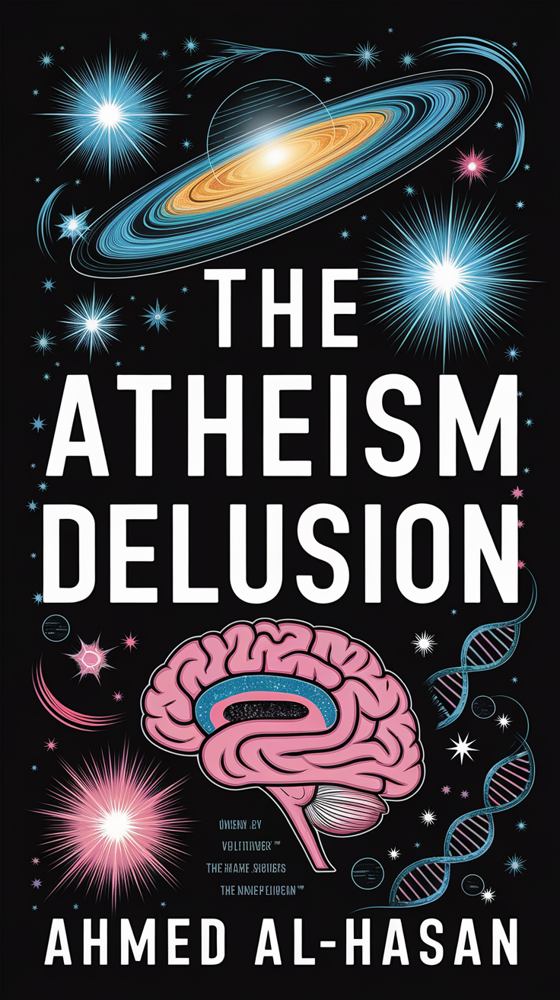

The Atheism Dellusion
Ahmad Alhasan
Den evige debatten mellom religion og vitenskap er avgjort med dette verket, hvor forfatteren klargjør opprinnelsen til Adam og hvordan religiøse trosretninger er kompatible med moderne vitenskap. Dette skjer i en tid hvor vitenskapelig ateisme dominerer, mens forsøkene på å forsvare guddommelige religioner har mislyktes i å rettferdiggjøre troen
Beyond the Horizon
M. M. Kaye
Boken følger historien om en ung kvinne, som reiser fra England til India på 1900-tallet. Gjennom hennes reise opplever hun ikke bare de fysiske utfordringene ved å navigere i et fremmed land, men også de emosjonelle og psykologiske aspektene ved å finne sin plass i en ny kultur.
The Wellness Code
Dr. Robert Zembroski
Boken fokuserer på hvordan man kan oppnå optimal helse og velvære gjennom en helhetlig tilnærming.
Boken kombinerer vitenskapelige prinsipper med praktiske råd, og tar for seg emner som ernæring, trening, mental helse og livsstil.